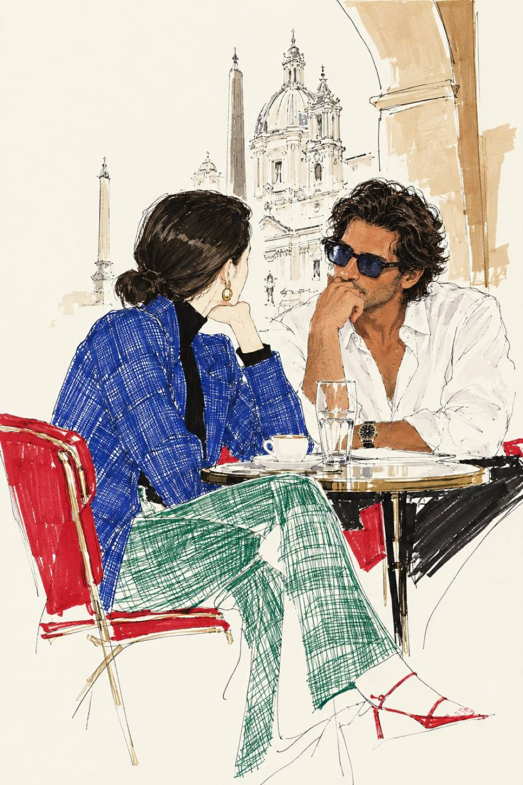

Рим

В Риме пошел дождь.
Селфи-палки в руках продавцов из Сомали мгновенно превратились в одноразовые зонты.
Куда-то помчались карабинеры, запевая мелодию города.
Брусчатка мгновенно нарядилась в блестящие лакированные туфли.
Был май.
Наполняясь любовью к городу, я наблюдала за римлянами, укрывшись в арке кафе на piazza Navona. Я всегда думаю, как это, иметь паспорт и видеть «город рождения Рим».
Передо мной сидел ОН.
Его кудрявая дочка с нежностью раскидала свои пряди у него на коленях, ежесекундно произносилось « Amore», она шутя кормила папу, а он ей подыгрывал…
Ворот его белоснежной рубашки был синонимом идеальности Tom Ford или хрустящего круассана.
Его смуглая кожа римлянина была зацелована итальянским солнцем с самого рождения.
Увесистые часы на его запястье призывали не следить за временем. Он поправлял своими пальцами удлиненные черные волосы, а голубые глаза в чёрной оправе Tom Ford. Смотрели. На меня.
Понаблюдав за этой идиллией любви папы и дочки, я исчезла в бутиках и музеях Рима.
Прошло два месяца.
Был июль. Я летела из Ниццы в Рим. Газеты и новостные ленты пестрили сообщениями о возгорании в багажном отделении аэропорта Рима.
Рейс задержали на 4-5-6-7-8 часов.
Я стояла возле табло и продумывала маршрут.
Я обернулась.
Рядом стоял он.
Тот самый римлянин в оправе Tom Ford. Тот римлянин, которого хотелось бы показать миру.
Он снова был в идеальной белой рубашке с подвернутыми рукавами.
«Ciao! Я запомнил тебя и мы давно не виделись. Я Томасо»
Наш рейс в Рим задержали на 10 часов. Голубые глаза в чёрной оправе Tom Ford. Смотрели. На меня